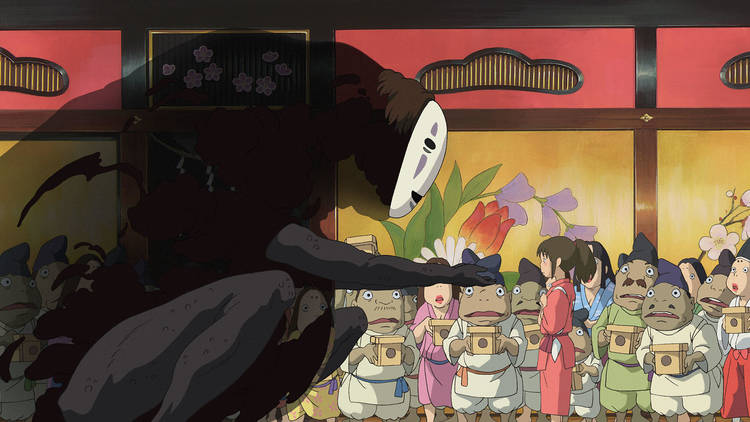
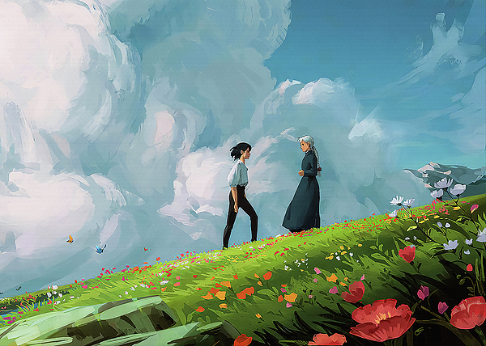
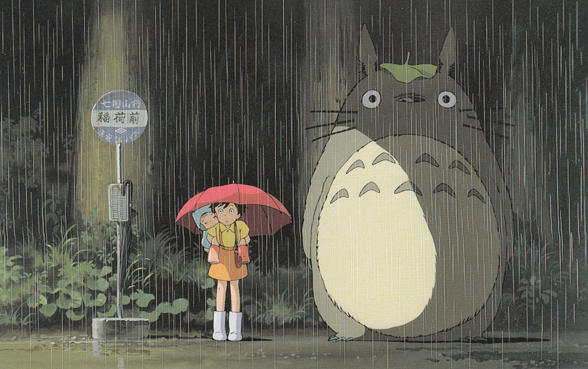
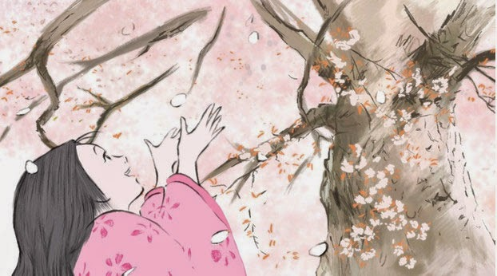
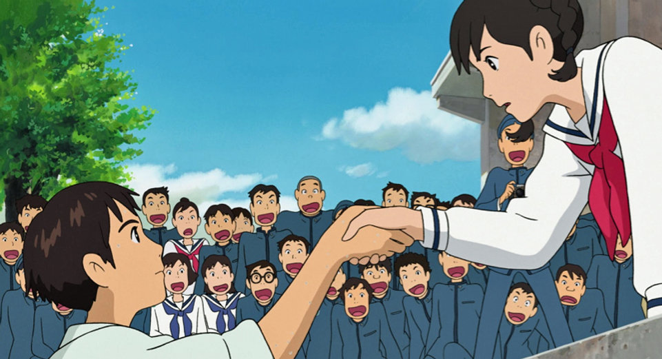
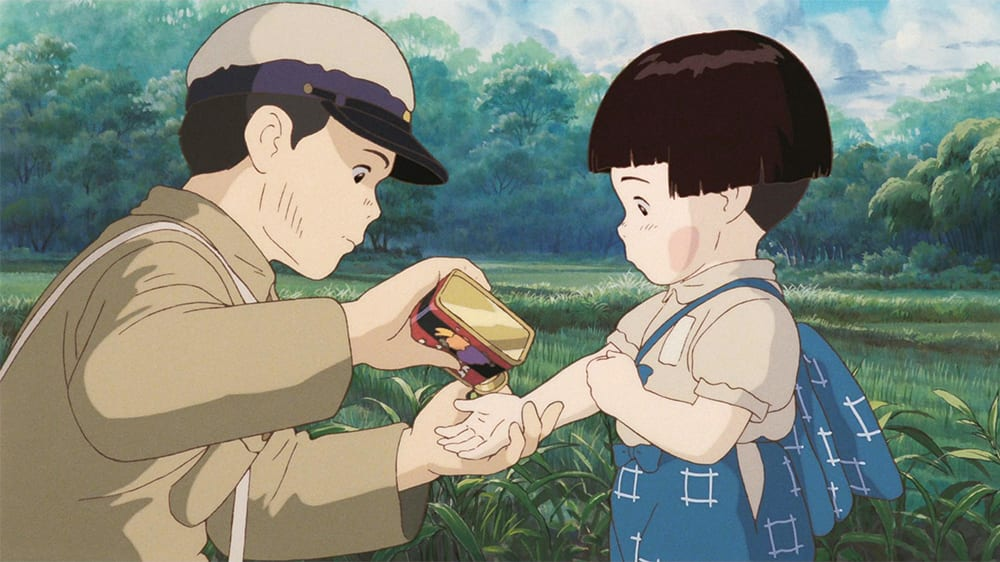
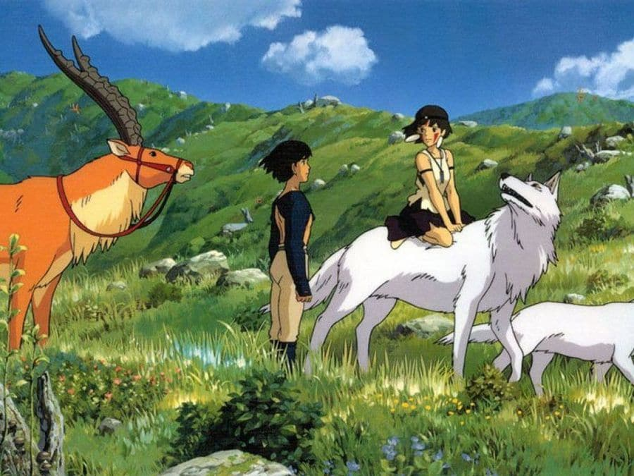

There are a lot of Ghibli Movies that I like.I really like Studio Ghibli movies because of their beautiful animation, heartwarming stories, and magical worlds. Films like Spirited Away,My Neighbor Totoro, and Howl's Moving Castle are my favorites. Each movie feels like a dreamy escape where nature, fantasy, and emotion come together in the most comforting way. But there are some soft type movies also like The tale of princess kaguya,From up on poppy hill. The characters are unique and inspiring, and the music always touches my heart. Ghibli movies are not just fun to watch—they make me feel calm, nostalgic, and hopeful every time.
Spirited Away
Spirited Away is one of Studio Ghibli's most beloved and magical films, directed by the legendary Hayao Miyazaki. It tells the story of a young girl named Chihiro who gets trapped in a mysterious and spirit-filled world while trying to save her parents, who have been turned into pigs. As she navigates this strange place, she learns to be brave, strong, and kind. The film is full of breathtaking animation, deep emotions, and powerful messages about identity, courage, and growing up. With unforgettable characters like Haku, No-Face, and Yubaba,Spirited Away is not just a fantasy adventure — it's a beautiful journey of self-discovery that touches the heart of viewers of all ages. Soundtrack of this movie
Howl's Moving Castle
Howl's Moving Castle is a magical and heartwarming film by Studio Ghibli, directed by Hayao Miyazaki. It follows a young woman named Sophie who is cursed to become an old lady and seeks help from the mysterious wizard Howl, who lives in a magical, walking castle. As they journey together, Sophie discovers her own strength, and Howl learns to face his fears. With stunning animation, charming characters, and a deep anti-war message, the film beautifully explores love, courage, and the power of inner beauty. Soundtrack of this movie
My Neighbor Totoro
My Neighbor Totoro is a sweet and charming Studio Ghibli film directed by Hayao Miyazaki. It tells the story of two young sisters, Satsuki and Mei, who move to the countryside and meet a gentle forest spirit named Totoro. As they explore their new home, the magical creatures they encounter bring comfort and joy during a time when their mother is sick. With its peaceful setting, lovable characters, and themes of childhood wonder and nature, My Neighbor Totoro is a timeless film that warms the heart. Soundtrack of this movie
Tale of Princess Kaguya
The Tale of the Princess Kaguya is a beautifully animated Studio Ghibli film directed by Isao Takahata. Based on a classic Japanese folktale, it follows a mysterious girl found inside a bamboo stalk who grows into a radiant young woman. As she struggles with the expectations of nobility and her true identity, the story explores themes of freedom, sorrow, and the fleeting nature of life. With its unique watercolor-style animation and emotional depth,The Tale of the Princess Kaguya is a poetic and deeply moving masterpiece. Soundtrack of this movie
From Up On Poppy Hill
From Up on Poppy Hill is a gentle and nostalgic Studio Ghibli film directed by Goro Miyazaki. Set in 1960s Yokohama, it follows a high school girl named Umi and a boy named Shun as they work together to save their school's old clubhouse from being demolished. As they grow closer, they uncover surprising truths about their pasts. With its warm atmosphere, touching romance, and beautiful hand-drawn animation, From Up on Poppy Hill captures the spirit of youth, memory, and hope for the future. Soundtrack of this movie
Grave Of The Fireflies
Grave of the Fireflies is a powerful and heartbreaking Studio Ghibli film directed by Isao Takahata. Set during World War II, it tells the story of a young boy named Seita and his little sister Setsuko as they struggle to survive after losing their home and family in the bombings. The film portrays the devastating impact of war through the eyes of children, highlighting love, loss, and the fragility of life. With its emotional depth and haunting beauty, Grave of the Fireflies is a deeply moving reminder of the human cost of war. Soundtrack of this movie
Ponyo

Ponyo is a delightful and colorful Studio Ghibli film directed by Hayao Miyazaki. It tells the story of a goldfish named Ponyo who dreams of becoming human after meeting a kind boy named Sosuke. As their friendship grows, Ponyo's magical transformation brings both wonder and chaos to the world around them. With its vibrant animation, playful energy, and themes of love, nature, and balance, Ponyo is a heartwarming adventure perfect for viewers of all ages. Soundtrack of this movie
Princess Mononoke
Princess Mononoke is an epic and thought-provoking Studio Ghibli film directed by Hayao Miyazaki. It follows a young warrior named Ashitaka who becomes involved in a conflict between humans and the spirits of the forest, including a fierce girl raised by wolves named San, or Princess Mononoke. The film explores deep themes like nature versus industry, harmony, and the cost of progress. With stunning animation and a powerful story, Princess Mononoke is a gripping tale of courage, compassion, and the fight to protect the natural world. Soundtrack of this movie
Kiki's Delivery Service

Kiki's Delivery Service is a charming and uplifting Studio Ghibli film directed by Hayao Miyazaki. It follows a young witch named Kiki who moves to a new city to live independently and start her own delivery service using her flying broom. As she faces challenges and self-doubt, Kiki learns about responsibility, friendship, and believing in herself. With its cozy atmosphere, beautiful animation, and inspiring message, Kiki's Delivery Service is a delightful story about growing up and finding your place in the world. Soundtrack of this movie
Castle In The Sky

Castle in the Sky is an adventurous and magical Studio Ghibli film directed by Hayao Miyazaki. It follows two children, Sheeta and Pazu, as they search for a legendary floating island called Laputa while being chased by pirates and government agents. Along the way, they uncover secrets about Sheeta's mysterious past and the powerful technology hidden in the sky. With stunning visuals, thrilling action, and themes of friendship, courage, and the dangers of greed, Castle in the Sky is a timeless tale full of wonder and heart. Soundtrack of this movie
When Marnie Was There

When Marnie Was There is a touching and emotional Studio Ghibli film directed by Hiromasa Yonebayashi. It tells the story of a lonely girl named Anna who is sent to the countryside for her health and meets a mysterious girl named Marnie. As their friendship grows, Anna begins to uncover secrets about Marnie and her own past. With its gentle storytelling, beautiful animation, and themes of memory, identity, and healing, When Marnie Was There is a heartfelt and haunting story that stays with you. Soundtrack of this movie